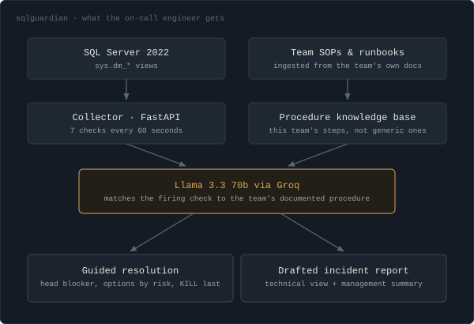
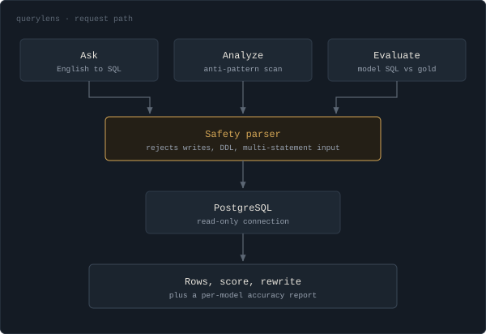
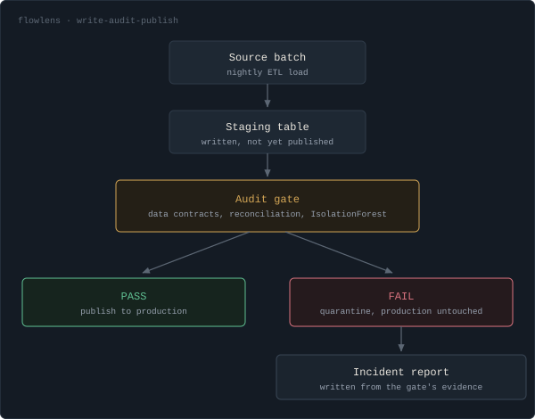

I run production SQL Server for a national tolling platform at TransCore: 150+ instances, a 6TB primary, and roughly 2.5 million transactions a day. Day to day that means tuning queries against real execution plans, keeping Always On availability groups healthy, automating the maintenance that shouldn't need a person, and picking up the phone when something breaks at 2am.
Before TransCore I did the same work under bank audit rules at Bank of America, and on energy reporting data at Shell. Different industries, same job: keep the data correct and the server up.
For the last two years I've been building tools on top of that experience. SQLGuardian reads live DMV output and explains a blocking chain the way I would explain it to a junior DBA. FlowLens holds an ETL batch in staging until its row counts reconcile. QueryLens grades SQL, including SQL a model wrote. All three run against real SQL Server and Postgres instances.
Own database reliability for a national tolling platform. Tune queries and indexes against real execution plans, run Always On availability groups and the DR drills that prove they work, automate maintenance with SQL Agent and PowerShell, and lead incident response when something goes wrong in production.
Ran databases under financial-services audit rules: verified backup and restore, hardened security and logins, pushed every change through formal approval gates, and tuned reporting workloads. Anything I touched had to be documented well enough to survive an audit months later.
Supported the operational reporting databases behind energy data. Schema design, ETL support, and maintenance automation, plus a long stretch of query optimization that cut runtime on the worst reporting queries by about 60% through index changes and rewritten joins.
Each one came out of a problem I hit on the job. All three of the live ones run against real databases.
AI-assisted SQL Server health monitoring
SQLGuardian runs seven DMV-based checks every 60 seconds (blocking chains, wait statistics, Agent job failures, disk space, backup age, log growth, and long-running requests) and hands the snapshot to an LLM that writes the explanation. When it catches blocking it names the head-blocker session, shows the statement holding the lock, and lists the options in order of risk, with KILL last. The same snapshot renders two ways: a technical view for the DBA, and a short summary for whoever is asking why the app feels slow.

Natural language to SQL, and a query analyzer
Two tools in one app. Ask turns a plain-English question into SQL, runs it against a live PostgreSQL database, and shows both the query and the rows that came back. Analyze checks a query you already have against nine rules for the patterns that stop an index being used: a function wrapped around an indexed column, a leading-wildcard LIKE, NOT IN against a subquery. It returns a score out of 100, a letter grade, and for every finding, what is wrong and what to write instead. The scoring is plain regex and arithmetic, so the same query always gets the same grade. The model writes SQL; it never grades it. The database connection only executes statements that begin with SELECT.

Write-audit-publish gate for SQL Server ETL
A stored procedure can finish with no errors, log Succeeded, and still lose a third of its rows to one bad join. FlowLens loads each batch into staging and holds it there until it clears three gates: the declared data contracts, a source-to-target reconciliation on row counts and key values, and an IsolationForest check against the batch history. The verdict is deterministic SQL and statistics. The LLM only writes the incident report, using the evidence the gate already collected, so it has no way to declare a bad batch clean.

Database access auditing and anomaly detection
Builds audit evidence packs mapped to SOX and HIPAA controls, inventories role membership and privilege creep across instances, and flags unusual access against a statistical baseline plus an Isolation Forest model. It came directly out of the evidence-gathering work I did every quarter at Bank of America.
Open to database administration, database engineering, and data platform roles. Remote, or in Houston, and happy to relocate for the right team.
Download Resume